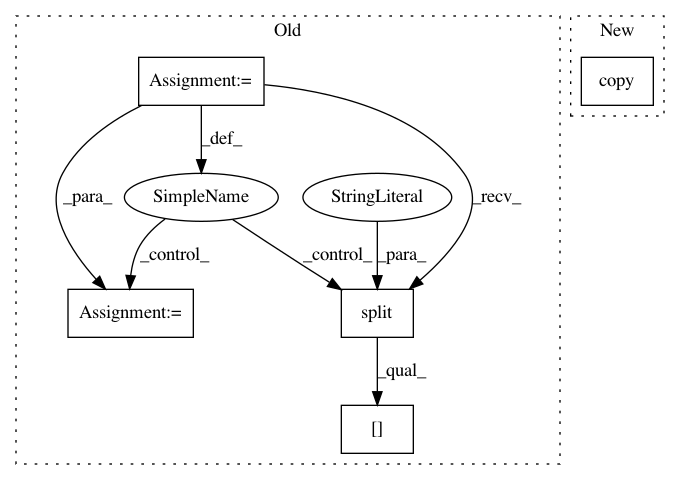

d5caf230ff50260c1a6565db35edeeddd5d407e6,build/boilerplate/boilerplate.py,,get_refs,#,34
Before Change
def get_refs():
refs = {}
for path in glob.glob(os.path.join(rootdir, "build/boilerplate/boilerplate.*.txt")):
extension = os.path.basename(path).split(".")[1]
ref_file = open(path, "r")
ref = ref_file.read().splitlines()
ref_file.close()
refs[extension] = ref
return refs
def file_passes(filename, refs, regexs):
try:
After Change
ref_file.close()
refs = {}
for extension in ["sh", "go", "py"]:
refs[extension] = copy.copy(ref)
prefix = ""
if extension == "go":
prefix = "//"
else:
In pattern: SUPERPATTERN
Frequency: 3
Non-data size: 5
Instances
Project Name: kubeflow/kubeflow
Commit Name: d5caf230ff50260c1a6565db35edeeddd5d407e6
Time: 2018-02-08
Author: mitake.hitoshi@gmail.com
File Name: build/boilerplate/boilerplate.py
Class Name:
Method Name: get_refs
Project Name: cesium-ml/cesium
Commit Name: 74310f451bd204e682b27c9b296d71a22c941cd3
Time: 2015-02-09
Author: a.crellinquick@gmail.com
File Name: mltsp/run_in_docker_container.py
Class Name:
Method Name: featurize_in_docker_container
Project Name: cesium-ml/cesium
Commit Name: 74310f451bd204e682b27c9b296d71a22c941cd3
Time: 2015-02-09
Author: a.crellinquick@gmail.com
File Name: mltsp/run_in_docker_container.py
Class Name:
Method Name: predict_in_docker_container